📅 九日行程詳細內容
Day 1
☀️ 抵達放鬆，吃一頓好料開啟假期
4/25 (六)
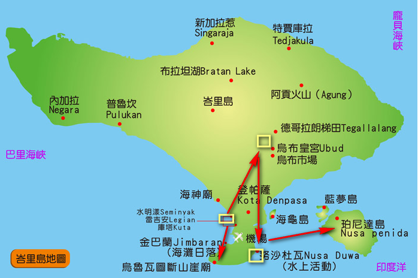
一抵達就入住水明漾的萬怡飯店，飯店舒適、地點方便。晚上就吃口碑超高的西班牙料理 Alma Tapas Bar，好吃又有氣氛，完美開場。
🍽️ 餐食
💡 飯店稍作休息之後，去吃好吃的晚餐，熟悉飯店，結束第一天的舟車勞頓。
Day 2
🌅 逛街＋咖啡＋夕陽海灘俱樂部
4/26 (日)
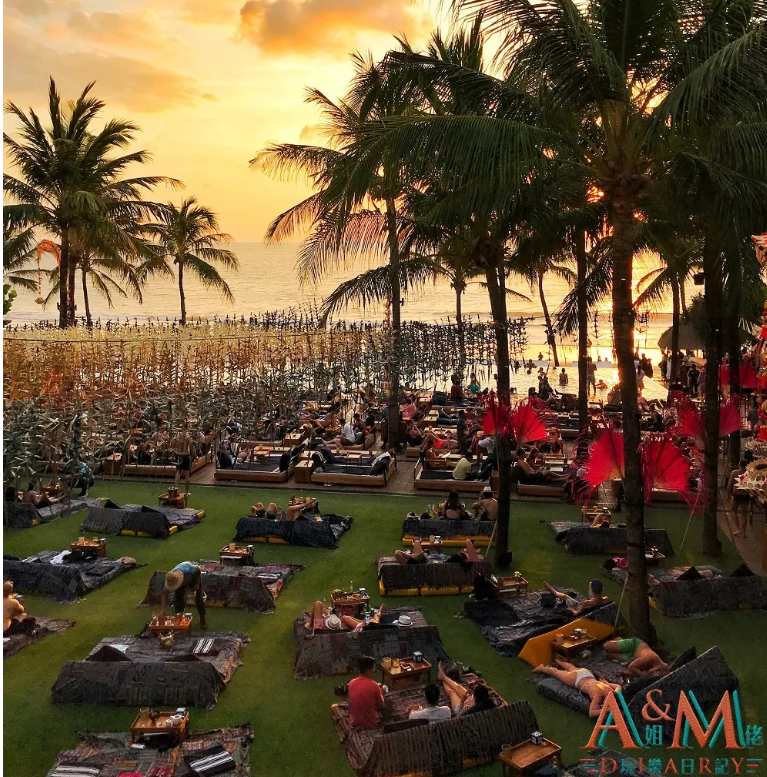
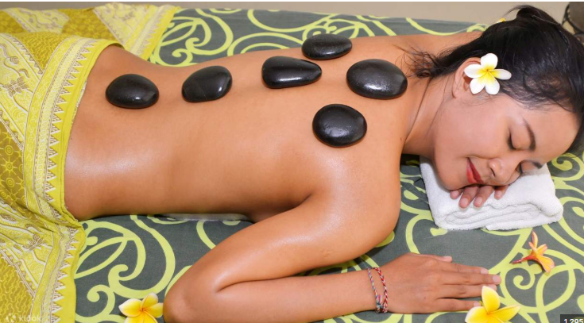
白天在水明漾逛街＋按摩＋文青咖啡店，超放鬆。晚餐安排在海邊超有名的 Potato Head Beach Club，邊看夕陽邊吃飯，一邊吹海風一邊放空，超級療癒。
🏨 住宿
Courtyard Bali Seminyak Resort
🍽️ 餐食
✨ 今日亮點
- ☕ Titik Temu Coffee @ Seminyak 人氣文青咖啡店 📖 遊記
- 🛍️ Seminyak Village 商場 📖 遊記
- 🌅 Potato Head Beach Club：晚餐 + 夕陽 + 玩水 📖 遊記1 📖 遊記2
- 💆 Lluvia Spa 熱石 SPA 📖 遊記
Day 3
⛰ 懸崖美景日：峽谷步道＋無邊際泳池＋夕陽廟宇
4/27 (一)
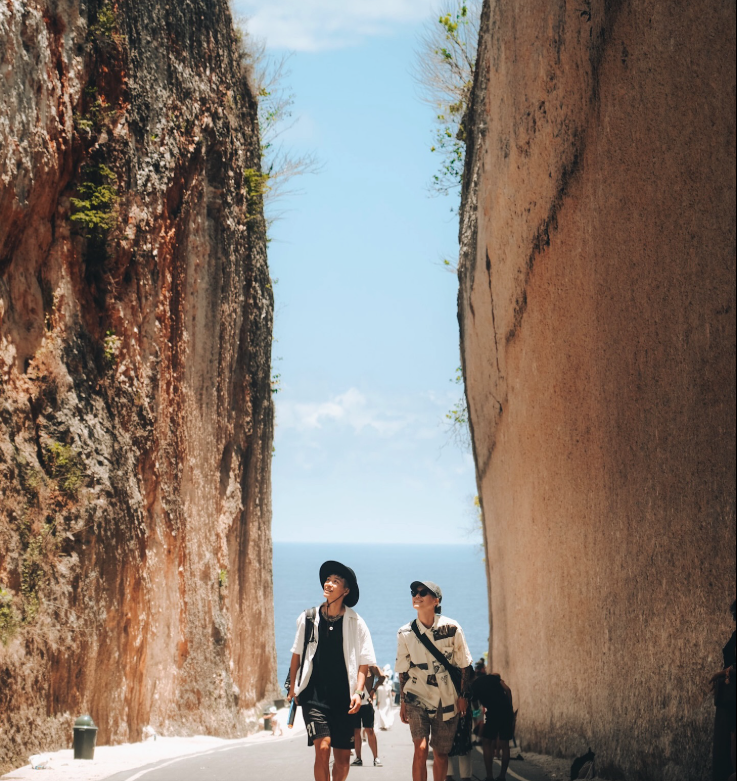
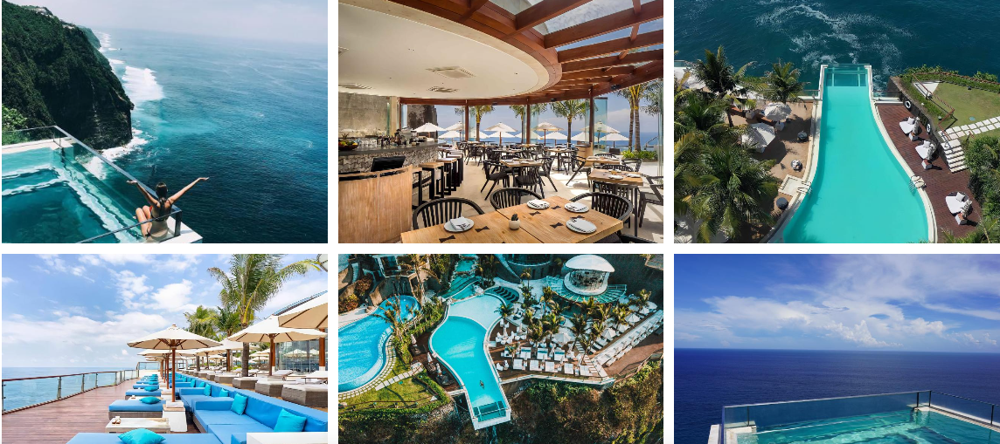
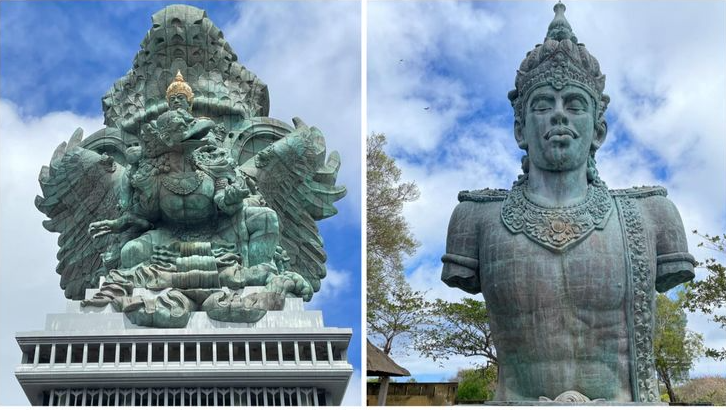
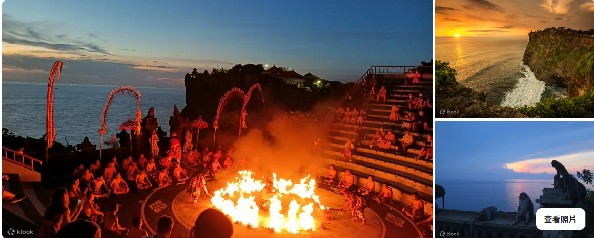
這天是絕景滿滿的一天。早上先去走 Tanah Barak 石灰岩峽谷步道，接著到 One Eighty 懸崖泳池餐廳享用海景午餐。下午到神鷹廣場，最後在烏魯瓦圖廟看夕陽＋ Kecak 火舞，景色壯觀。晚餐則是水明漾人氣韓式烤肉，每個行程都讓人滿意。
🏨 住宿
Courtyard Bali Seminyak Resort
🍽️ 餐食
✨ 景點路線
水明漾萬豪飯店 → Tanah Barak Cliff 石灰岩峽谷步道
📖 遊記 (20分)
→ One Eighty Day Club
📖 遊記
→ GWK 神鷹廣場
📖 遊記 (10分)
→ 烏魯瓦圖寺 + Kecak 火舞表演
📖 遊記 (1hr)
→ 水明漾萬豪飯店
Day 4
🌾 山區療癒轉場：梯田＋烏布皇宮＋咖啡館
4/28 (二)
 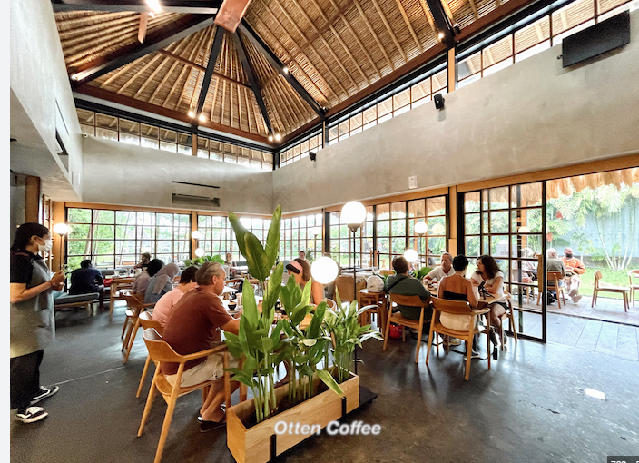
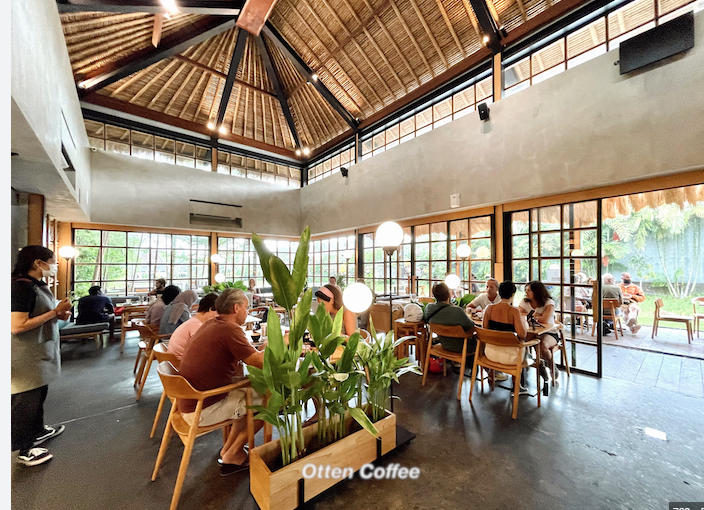
前往烏布，行程轉為綠意自然風。走訪德哥拉朗梯田與烏布皇宮，中午在 Pison Café 享用咖啡與美食。住進靜謐又舒服的 Adiwana Suweta 飯店，節奏慢下來，讓人很放鬆。
🍽️ 餐食
✨ 今日亮點
- 🌾 德哥拉朗梯田（Alas Harum Bali）：叢林夢幻鞦韆與無邊際泳池咖啡廳 📖 遊記
- 🏛️ 烏布皇宮
- ☕ Seniman Coffee（亞洲 TOP50 咖啡店）
Day 5
🏞 叢林冒險＋森林＋SPA放鬆
4/29 (三)
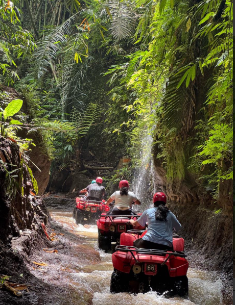
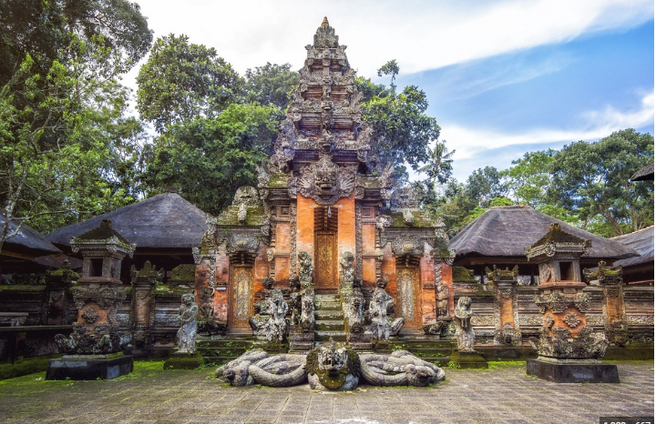
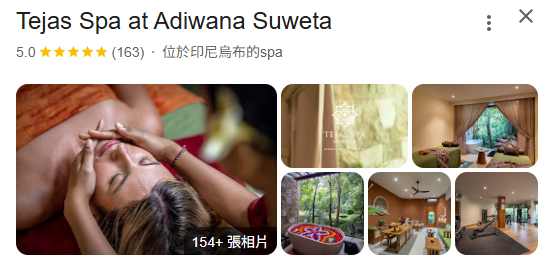
早上安排 ATV 越野體驗，刺激又好玩。接著去聖猴森林和人氣餐廳，晚餐吃義式與日式交替。最後在飯店做 SPA，整天身心都放鬆。
🏨 住宿
Adiwana Suweta
🍽️ 餐食
✨ 活動體驗
- 🏍️ 烏布 ATV 越野體驗 1.5 hr（DADI Bali Adventures提供）
- 🐒 聖猴森林公園（Ubud Monkey Forest） 📖 遊記1 📖 遊記2
- 💆 Tejas Spa（就在飯店）
Day 6
💦 三座特色瀑布＋景觀午餐
4/30 (四)
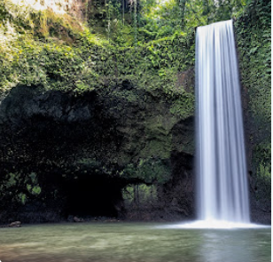
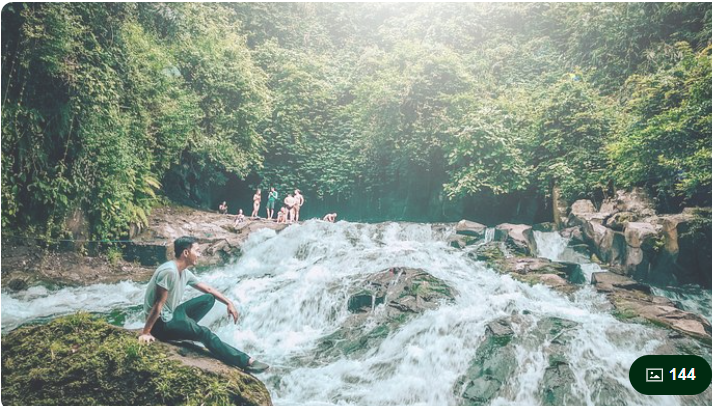
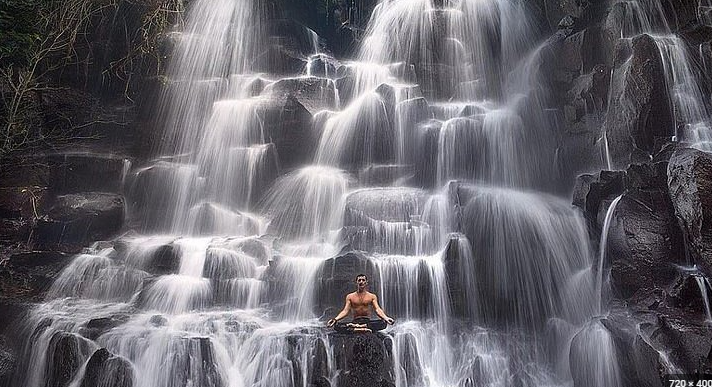
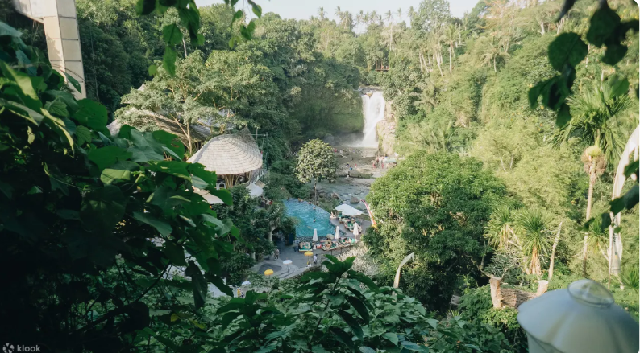
這天是走訪三個人氣瀑布：Tibumana、Kanto Lampo、Goa Rang Reng，每一個都風格不同，沿路都是綠意和水聲。中午安排在可以直接看瀑布的 OMMA Club 用餐，景色與餐點都很舒服。
🍽️ 餐食
✨ 瀑布巡禮
- 💧 Tibumana Waterfall 📖 遊記
- 💧 Goa Rang Reng Waterfall 📖 遊記
- 💧 Kanto Lampo Waterfall 📖 遊記
- 🍽️ OMMA Dayclub - 擁有瀑布超美的 Club 📖 遊記
Adiwana Suweta → 烏布瀑布巡禮 → Renaissance Bali Nusa Dua Resort
Day 7
🌊 回歸海邊：入住五星度假村耍廢日
5/1 (五)
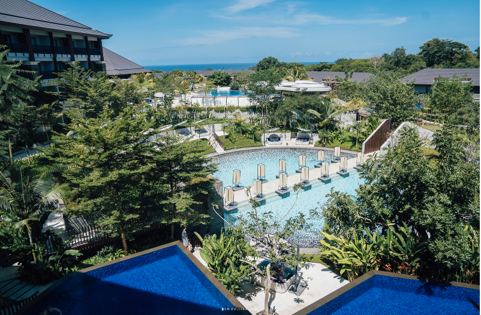
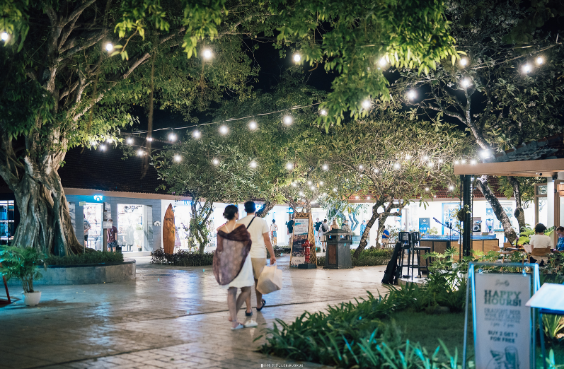
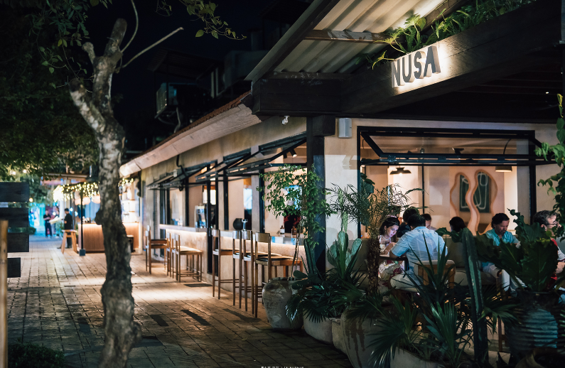
移動到努沙杜瓦的萬麗度假村，環境優雅、設施齊全。這天行程簡單，就是待在飯店耍廢＋吃好吃的餐廳，完全進入度假狀態。
🏨 住宿
Renaissance Bali Nusa Dua Resort
🍽️ 餐食
✨ 飯店設施
- 🏊 超讚泳池
- 🚐 免費沙灘接駁車 📖 飯店介紹
- 🛍️ Bali Collection 下午四點後來逛逛順便吃晚餐 📖 餐廳推薦
Day 8
🏝 跳島一日遊：藍夢島＋金銀島
5/2 (六)
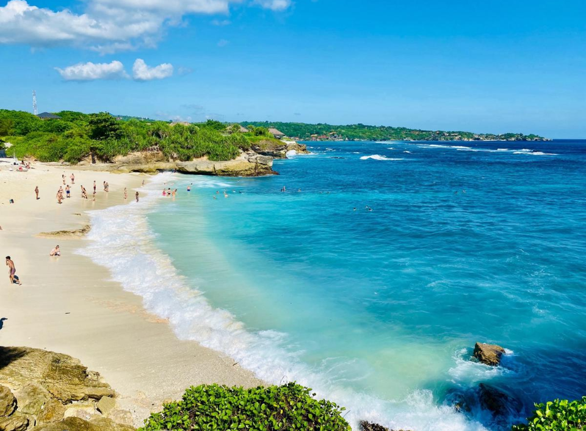
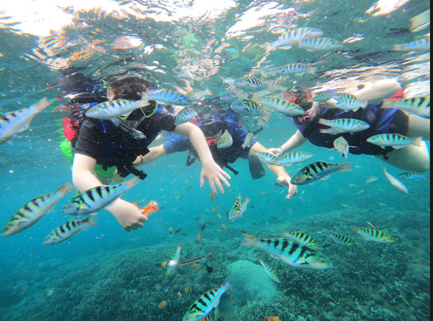
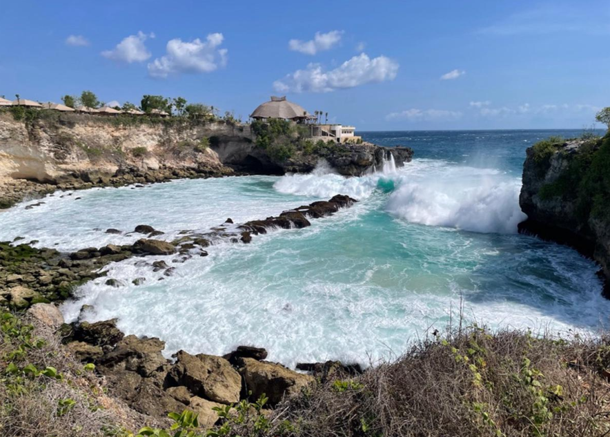
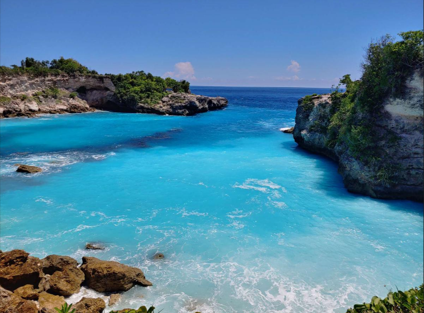
搭船出海，玩水、曬太陽、拍照，很舒服、也不擁擠。晚餐吃在地必吃的烤豬飯或髒鴨飯，畫下一天完美句點。
🏨 住宿
Renaissance Bali Nusa Dua Resort
🍽️ 餐食
✨ 跳島行程
- 🏝️ 藍夢島＆金銀島一日遊（小島玩起來比較不擁擠且悠閒）
- 🍖 Dobiel 烤豬飯、Bebek Bengil 髒鴨飯 美食推薦
💡 需要自己坐車到港口
Day 9
✈️ 最後早餐＋回台灣
5/3 (日)
早上在飯店悠閒吃完早餐，準備收心回家，結束這趟充滿療癒風景與美食的假期。
🏨 住宿
回到溫暖的家 🏠
🍽️ 餐食
早：飯店早餐
午：機場看狀況吃
晚：—
午：機場看狀況吃
晚：—
飯店 → 到機場 (12:40要到) → 飯店耍廢